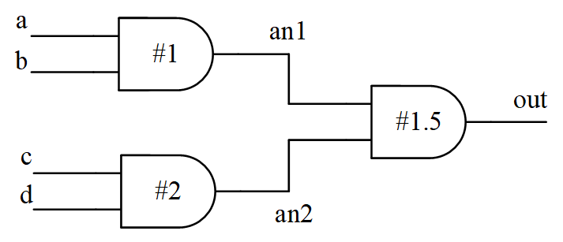

Palabras clave: retardo distribuido, retardo concentrado, retardo de trayectoria
La mayoría de las simulaciones anteriores verificaban la corrección funcional de los circuitos digitales, y la transmisión de señales era ideal, sin retardo. Sin embargo, los componentes lógicos reales y las rutas de transmisión entre ellos siempre presentan retardos. Por lo tanto, es necesario comprobar si los retardos en el diseño cumplen los requisitos de restricciones de temporización del circuito real. Se puede utilizar el método de simulación de temporización para verificar la temporización (timing), es decir, añadir información de retardo acorde con la realidad a los componentes o rutas durante la simulación, y realizar los cálculos correspondientes para determinar si la temporización se cumple.
El análisis estático de temporización (Static Timing Analysis, STA) es también una técnica de verificación de temporización. No se preocupa de si la función lógica es correcta o no; solo realiza el cálculo y análisis de la temporización en el diseño para determinar si existen diseños que violan (violation) las restricciones de temporización en el circuito. El análisis STA es rápido y puede localizar problemas con rapidez, pero ignora algunos problemas asíncronos.
Por lo tanto, “STA + simulación de temporización” es un método de verificación de temporización relativamente completo y seguro. Este tutorial solo hace una introducción sencilla a la simulación de temporización; por ahora no se discutirá la STA.
Existen principalmente 3 tipos de modelos de retardo:Retardo distribuido, retardo concentrado (lumped) y retardo de trayectoria.
Retardo distribuido
El retardo distribuido requiere definir el retardo para cada componente independiente del circuito; diferentes rutas tienen diferentes retardos, como se muestra en la siguiente figura.

El modelo Verilog de retardo distribuido es básicamente el mismo que la instanciación de celdas de puerta lógica con valores de retardo especificados.
Ejemplo
output out,
input a, b, c, d);
wire an1, an2 ;
and #1 (an1, a, b);
and #2 (an2, c, d);
and #1.5 (out, an1, an2);
endmodule
También se puede utilizar la sentencia de asignación continua assign para especificar el retardo distribuido.
Ejemplo
output out,
input a, b, c, d);
wire an1, an2 ;
assign #1 an1 = a & b ;
assign #2 an2 = c & d ;
assign #1.5 out = an1 & an2 ;
endmodule
Retardo concentrado
El retardo concentrado consiste en acumular todos los retardos de todas las rutas en la última celda de puerta.
El retardo hacia la última celda de puerta variará según la ruta; en este caso, se toma el retardo máximo como el retardo de la última celda de puerta.
La conversión del diagrama de retardo distribuido anterior en un diagrama de retardo concentrado se muestra a continuación.

El modelo Verilog de retardo concentrado es el siguiente.
Ejemplo
output out,
input a, b, c, d);
wire an1, an2 ;
and (an1, a, b);
and (an2, c, d);
and #3.5 (out, an1, an2); //set the max delay at the last gate
endmodule
Retardo de trayectoria
El retardo de trayectoria especifica el tiempo de retardo para todas las rutas desde cada pin de entrada hasta cada pin de salida.
El diagrama esquemático del retardo de trayectoria es el siguiente.

El modelo de retardo de trayectoria debe definirse con la palabra clave specify.
El modelo Verilog de retardo de trayectoria es el siguiente; el método de definición específico se detallará en la próxima sección.
Ejemplo
output out,
input a, b, c, d);
specify
(a => out) = 2.5 ;
(b => out) = 2.5 ;
(c => out) = 3.5 ;
(d => out) = 3.5 ;
endspecify
wire an1, an2 ;
and (an1, a, b);
and (an2, c, d);
and (out, an1, an2);
endmodule
Comparación de modelos de retardo
- Retardo distribuido: El retardo distribuido reparte el tiempo de retardo en cada celda de puerta, pero aún no puede describir las diferencias de retardo entre los diferentes pines de una celda básica. Cuando la escala del diseño aumenta, la estructura se vuelve compleja.
- Retardo concentrado: Este método tiene un modelo simple y es adecuado para circuitos de pequeña escala, pero no puede describir los retardos de diferentes rutas desde la entrada hasta la salida.
- Retardo de trayectoria: Especifica los retardos de pin a pin, y la información de retardo es bastante completa. Aunque hay más información, también es más fácil de implementar para circuitos a gran escala. Porque el diseñador no necesita preocuparse por la lógica de implementación interna del módulo, solo necesita conocer el retardo del pin de entrada al pin de salida. Incluso si la lógica interna del módulo cambia, la especificación del retardo de trayectoria puede permanecer igual.
Por lo tanto, la información de retardo en la mayoría de las bibliotecas de celdas de puerta lógica se proporciona en forma de retardo de trayectoria. Muchos módulos integrados también pueden obtener directamente el retardo de trayectoria de sus hojas de datos, lo cual es muy conveniente.